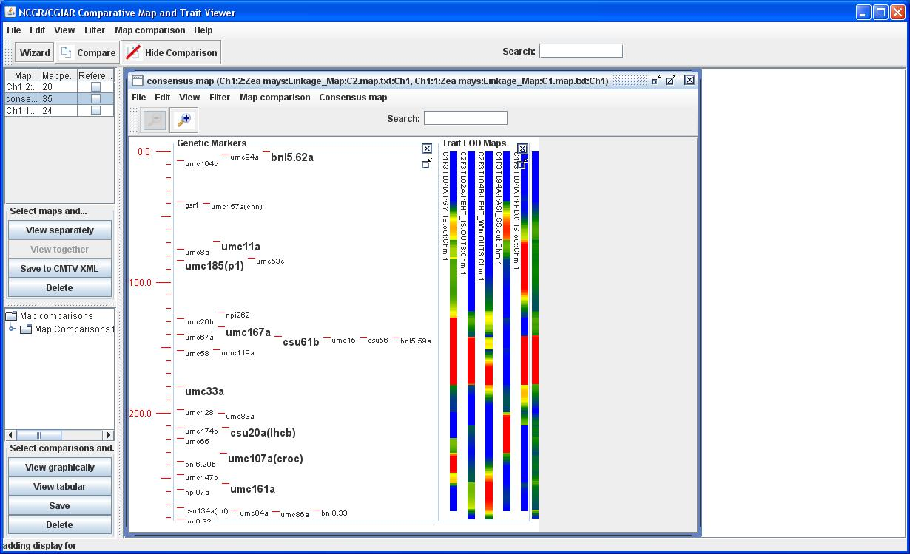
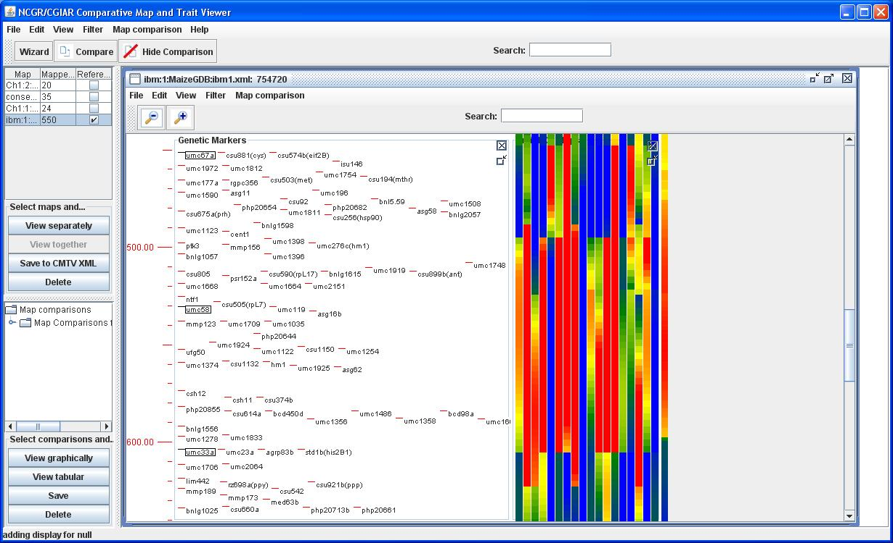

/bin/Components/cmtv/conf/styleRegistry.txt
file to include your styles of choice. The style specifications will be described
in detail elsewhere, but you may wish to copy some of the included stylesheet files
and try to modify them by hand to see how changes affect the representation
that is created.
Choose the "Labelled Markers with Labelled Trait LOD Heat Maps" style, and
click "Finish". You should see the Consensus map visualized with two
"tracks", one for the "Genetic Markers" and one for the "Trait LOD Maps" (you
may need to resize the map frame to see the latter- just drag a corner of the
frame as you would a normal desktop window, or click the "Maximize" icon near
the map frame's upper right-hand corner).

You've now seen one type of data aggregation using the consensus map. Now, let's
use the data aggregation wizard again, this time to explore the "reference map"
functionality of CMTV. Basically, a reference map is a map whose own data
remains fixed, while allowing other maps to be projected onto it by means of
their order-consistent common markers. This is quite similar to the way the
consensus map was defined, except that this was an essential part of the construction process
for the consensus map; for a reference map, the map may be given
independently of any other map data, and the coordinate translations will be
inferred on the basis of a constructed map comparison. Typically, a reference
map will be relatively dense with high-confidence marker data in order to
facilitate comparisons to maps derived from a wide variety of marker sets.
Begin by clearing the desktop with the main menu's "View -> Clear desktop" option.
Next, bring up the wizard with the "Wizard" button, choose the "Construct
aggregate view" option, and click "Next". This time, choose to "Load data from listing
service for target", and proceed to the listing service selection page.
Choose the "MaizeGDB" service and proceed to the query restriction dialog, where
you should specify "LinkageGroupName" = 1. After clicking "OK", you should see
a listing including two maps; click the checkbox in the "Reference map?" column
for the row starting with "ibm" to use the IBM Neighbors map for Chromosome 1
as your reference map, and click "Next".
By specifying that the given map is to be used as a reference, a number of special behaviors
are triggered. First and foremost, any map comparison that includes the reference map can be used
to define coordinate translations from the other maps in the comparison onto the reference
(provided certain basic requirements are met by the correspondences in the comparison from the source map to the reference map). This means that data from the comparable maps can be projected into the framework of the reference map. Second, CMTV can be configured such that particular map data loading services are accessed automatically and their contents compared to the newly specified reference map; this has the effect of
enabling aggregation of their traits onto the reference map without any further action on the part of the user. Finally, reference maps will behave slightly differently than other maps when a visualization is constructed- they are assumed to be so dense with markers that the full map content is not displayed automatically. Instead, markers are shown when they have been used to support the coordinate translations used by some data aggregation or when specifically requested by the user (by selecting a region on the map, right-mouse clicking and choosing the "Show all objects in region" option).
You now need to choose the maps to be combined
onto the selected reference. Choose the "Load data from listing service for
combined" option and click "Next", then specify the "Trait_LOD" service. Upon
clicking "Next", you will be presented with the restriction dialog. This time,
just click "OK" and no restriction will be imposed (other than that requiring
the maps be translatable into the coordinates of the reference). As described
above, the next
page gives you the chance to further restrict the data included from
the given maps, either by filtering out "distributions" that do not meet
a threshold in a given region, or simply by including map data within
a specified interval on the map. Since the Trait_LOD maps are distributions,
try specifying a Threshold value of 15 and clicking "Apply" directly below that
filter. This will exclude all map data not meeting the criterion. Select all
the remaining maps from the table, and click "Next". Choose the "Labelled Markers
with Unlabelled Trait LOD Heat Maps" style, and click "Finish".
The map that is displayed shows only that subset of markers matched in
the comparisons that established the coordinate translations for the
aggregated data. Click-drag to select the region corresponding to a
well-conserved QTL, then right-click on the region and select the
"Show objects in region" option. Finally, right-click and choose the
"Zoom to: " option to focus on that area of the map in the region of the
QTL.

Congratulations, you've finished the quick start guide.